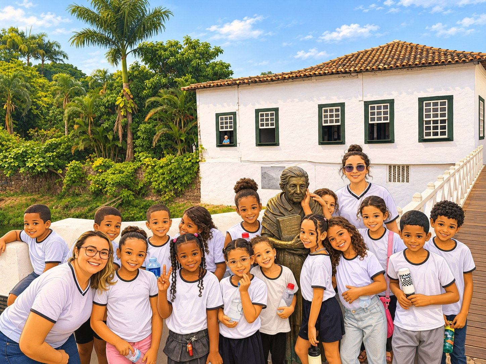

Ler e imaginar
Livros, textos, cartazes, fábulas e momentos de leitura para compreender e conversar sobre o mundo.
Portfólio de aprendizagens • 2026
Cada palavra descoberta, cada pergunta e cada experiência compartilhada fizeram parte do caminho do 2º Ano A.
Lar São José • Cidade de Goiás • Prof.ª Aryadne
Percorrer nossas memórias
Nossa trajetória
Este portfólio celebra experiências coletivas. Leitura, escrita, convivência, patrimônio e cuidado com o ambiente se encontraram em projetos que deram sentido ao que aprendemos.
Livros, textos, cartazes, fábulas e momentos de leitura para compreender e conversar sobre o mundo.
Agendas, desenhos, cadernos, croquis e produções coletivas como formas de expressão e autoria.
Produções artísticas, eventos culturais e ações comunitárias para aprender com o outro e compartilhar experiências.
Rio Vermelho, Cerrado, Centro Histórico e patrimônio local como espaços vivos de investigação.
Do começo do ano a novembro
Eventos e experiências
As imagens foram organizadas por acontecimento para que cada registro conte também o que a turma viveu e aprendeu.
Ao conhecer o gênero agenda, a turma conversou sobre organização, tempo, ordem alfabética e formas de registrar informações. A ideia de usar um QR Code aproximou a agenda de papel deste portfólio digital.
As vivências de leitura fortaleceram a escuta, a imaginação e a participação de cada criança.
Música, cores e convivência abriram espaço para conhecer manifestações da cultura brasileira e celebrar em grupo.
A turma conheceu e celebrou histórias que fazem parte da identidade da instituição e de sua comunidade.
A turma participou de uma atividade de prevenção e proteção. De forma cuidadosa e adequada à faixa etária, conversamos sobre respeito ao corpo, limites, adultos de confiança e a importância de pedir ajuda.
Preparação, música e celebração reuniram a turma em torno de tradições presentes na vida da comunidade.
Uma experiência de participação comunitária para conversar sobre respeito, cuidado, diálogo e convivência.
Conversas com profissionais ampliaram os conhecimentos sobre alimentação, água, saneamento e cuidado coletivo.
O Festival Internacional de Cinema e Vídeo Ambiental aproximou cultura, imagem, território e cuidado com a natureza. Reunimos os quatro registros em uma galeria própria para que cada momento possa ser visto por inteiro.
Toque ou clique em uma foto para ampliar.
Produções da turma
Os registros do cotidiano mostram ideias ganhando forma. A turma desenhou, escreveu, compartilhou produções e participou de escolhas coletivas, como a votação de desenhos. Cada imagem guarda um pouco dos processos, descobertas e formas de expressão construídos ao longo do ano.
Toque ou clique em uma imagem para ampliar.
16 de setembro
Na assemblagem, diferentes materiais, formas e objetos foram reunidos em uma composição artística. Antes de construir, as crianças criaram croquis para experimentar ideias, planejar a organização dos elementos e imaginar o resultado.
Toque em uma imagem para ampliar.
Vivência 5 • AlfaMais
Ao estudar o gênero cartaz, a turma percebeu como palavras e imagens se juntam para comunicar ideias. A atividade de 7 de setembro valorizou a autoria das crianças e sua escrita espontânea.
Setembro e outubro
O Rio Vermelho faz parte da história, da paisagem e da vida da Cidade de Goiás. O projeto reuniu educação ambiental, música, leitura, escrita e expressão artística.
A apresentação especial aconteceu em 8 de outubro de 2026.
Observar a paisagem, sua presença na cidade e sua importância para a vida.
Aprender a canção Rio Vermelho, Meu Rio e perceber ritmo, palavras e sentidos.
Conversar sobre atitudes que ajudam ou prejudicam o rio e o ambiente.
Produzir o mural, planejar figurinos, coreografia e mensagens de conscientização.
Apresentar o percurso, celebrar a produção coletiva e refletir sobre o que aprendemos.
“Cuidar do Rio Vermelho é cuidar da nossa cidade!”
Cidade da Literatura, Cidade que lê
A Cidade de Goiás também é sala de aula. Na visita técnica ao Centro Histórico e ao MUBAN, a turma observou lugares, histórias e paisagens, aprendendo que preservar a memória também é uma forma de cuidar do território.
Entre pontes, praças, museus e casas antigas, a turma encontrou escritoras e escritores que ajudam a contar Goiás. As imagens ilustradas preservam o passeio e convidam a ler a cidade como um livro aberto.
No Museu de Bandeiras e no Centro Histórico, a turma investigou marcas do passado, usos dos espaços e diferentes formas de preservar a memória.
O estudo do Cerrado, da água e do solo conectou conteúdos de Ciências às atitudes necessárias para cuidar do lugar onde vivemos.
Leitura para além da escola
Sem transformar as férias em obrigação escolar, as famílias podem ler juntas, contar histórias, conversar sobre personagens e visitar espaços que aproximam as crianças dos livros.
Um espaço de leitura no Espaço Cultural Vila Esperança, na Cidade de Goiás. Confirme os horários antes da visita.
Conhecer a biblioteca ↗Escolher um livro, ouvir a criança e conversar sobre as imagens já transforma a leitura em um encontro afetivo.
Memórias, causos, receitas e brincadeiras também são textos culturais que passam de uma geração a outra.
“Aprender a ler é ganhar novas maneiras de conhecer e compreender o mundo.”
Com carinho, professora Aryadne • 2º Ano A • 2026